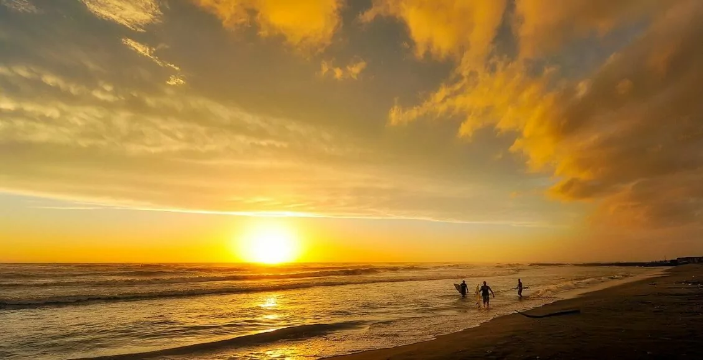

Verão
O verão ocorre entre os meses de junho e setembro (no hemisfério norte) e dezembro e março (no hemisfério sul).
Durante o verão, as temperaturas são mais quentes, os dias são mais longos e a vegetação está em pleno crescimento.
O verão ocorre entre os meses de junho e setembro (no hemisfério norte) e dezembro e março (no hemisfério sul).
Durante o verão, as temperaturas são mais quentes, os dias são mais longos e a vegetação está em pleno crescimento.